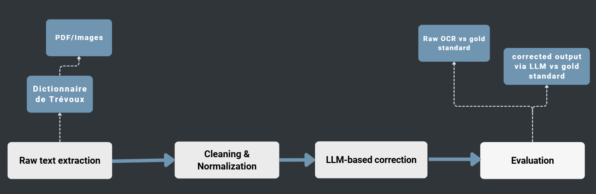

Introduction
This project aims to evaluate the performance of an OCR system applied to historical French documents from the 18th century.
The main challenges include:
Old orthography (e.g. “portoient”, “appelloit”).
Non-standard punctuation and spelling.
Degraded scan quality.
Historical vocabulary.
We propose a pipeline combining:
{kind=link}

- 1. Mistral OCR for raw text extraction:
Input: scanned historical document images.
Output: raw OCR transcription.
Preserves basic layout (lines, spacing when available).
Handles complex structures (columns, footnotes, dictionary entries).
- 2. Cleaning and normalization:
Removes OCR noise (artifacts, markdown, broken characters).
Standardizes whitespace and line breaks.
Unicode normalization and special character handling (e.g., ſ → s, æ → ae).
Output: cleaned text ready for correction.
- 3. LLM-based correction using Mistral Large:
Input: cleaned OCR text.
Corrects OCR errors while preserving historical spelling.
Fixes misrecognitions and word splits.
Preserves archaic French forms (portoient, appelloit, …).
Output: corrected transcription.
- 4. Evaluation using CER and WER metrics:
Reference: gold standard text.
CER: character-level error measurement.
WER: word-level error measurement.
Comparison: OCR vs gold, corrected vs gold.